Over the next few weeks we will be puting all venue maps, navigation instructions and other useful or fascinating information on this page to help you become familiar with our venue.
Welcome to Student Center East (SCE) at the University of Illinois at Chicago. It's a long rectangular structure built in the style of brutalist architecture in the 1960s. It was once known as the Chicago Circle Center (CCC), which refers to the (in)famous and recently renamed Jane Byrne highway interchange in Chicago's downtown, and UIC's original name: University of Illinois at Congress Circle.
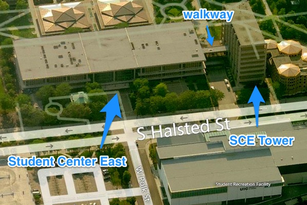
Since the pre-conference training and sprints will take place at the north end of the building (Student Center East Tower), and the conference itself will take place in the south end (Student Center East), let's take a closer look at each location depending on the days.
TRAINING DAY (Thursday)
Training sessions will take place in the Student Center East Tower, SCE's taller sibling. The two buildings are connected by a second floor passageway, so to most folks think they are the same building. Training rooms are on the 3rd and 6th floors of the SCE Tower. There are two routes you can take, depending on the direction from which you approach the venue.
Main entrance route
Approximate walking time from Student Center East main entrance (750 South Halsted) :
- to elevator (to 2nd floor): 20 seconds
- to escalator (to 2nd floor): 30 seconds
- from second floor of SCE to SCE Tower elevators: 2 minutes
If you are driving to UIC, you will most likely park in the Halsted-Taylor Parking Structure (Lot 4). After parking, head toward Halsted and Polk (750 South Halsted) to the main entrance to Student Center East. This is also a good place for taxi drop-off.
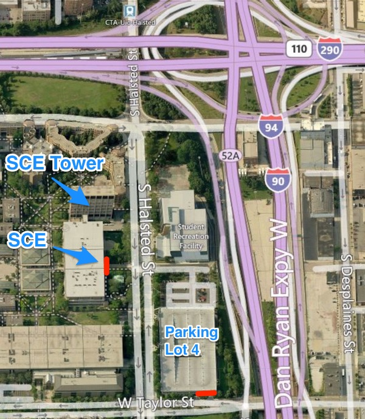
Terrain map of Student Center East, SCE Tower and Parking Lot 4. Main entrances marked in red.
Past the main entrance doors, turn right. There will be an elevator (elevator #6) to the right, just past the UIC Information Desk. Take the elevator to 2nd floor. Or, continue to the left and then turn right toward a set of escalators and stairs. Take them to 2nd floor.
From the elevator, go a bit forward then turn right and head forward past the escalators. Now the two paths converge. Go forward down the passageway to SCE Tower, until there are 3 elevators to your left. Take one of the elevators to 3rd or 6th floor.
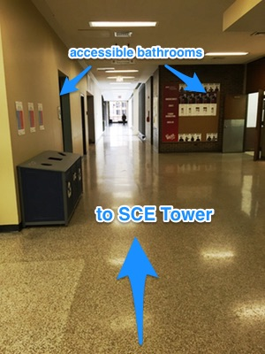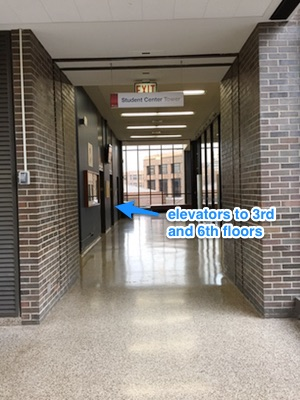
Alternate entrance route
If you are taking public transit, specifically the CTA Blue Line train to the UIC - Halsted stop, you will be approaching the venue from the north. There is a smaller, also accessible entrance directly into SCE Tower. Rather than walking all the way south to the main entrance, you can enter the SCE Tower by turning right from Halsted after you pass the emergency call-box number 161.
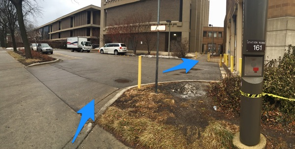
Head forward between the buildings. There will be a ramp on your left, as well as a short staircase to the entrance. Once inside, take the one of the 3 elevators on your right to the 3rd or 6th floor.
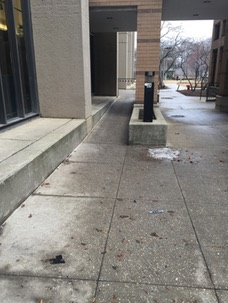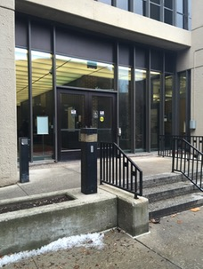
Accessible bathrooms
There are bathrooms on the 3rd and 6th floors of SCE Tower, but they are not accessible. The nearest accessible bathrooms are located in the 2nd floor passageway. Take the elevator down to 2nd floor, turn right and head toward the escalators. The bathrooms will be on your left or right before you reach the campus convenience store.
Bathrooms are labeled "men" and "women", and there are no family or gender-neutral bathrooms in the building.
Floor plans
These are annotated floor plans of Student Center East and SCE Tower that show venue rooms and routes you can take:
- Student Center East - Ground Floor (main entrance) [pdf]
- Student Center East - 2nd Floor [pdf]
- SCE Tower - Ground Floor (alternate entrance) [pdf]
- SCE Tower - 2nd Floor [pdf]
- SCE Tower - 3rd Floor [pdf]
- SCE Tower - 6th Floor [pdf]
Conference (Friday and Saturday)
Approximate walking time from main entrance:
- to elevator (to 2nd or 3rd floor): 20 seconds
- to escalator (to 2nd floor): 30 seconds
- to 3rd floor conference area: 2 minutes via escalators
Conference sessions will be in the 3rd floor conference area of Student Center East (this is a different 3rd floor than the one in SCE Tower where the trainings are on Thursday). Registration will be on the 2nd floor, behind the 2nd floor escalators.
Enter through the main entrance at Halsted and Polk (750 South Halsted). Past the main entrance doors, turn right.
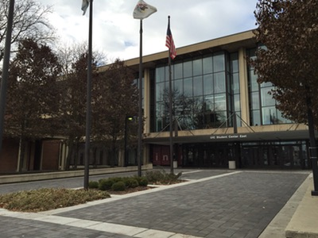
Escalator and elevator routes
There will be an elevator (#6) to the right, just past the UIC Information Desk. Take the elevator to 2nd floor. Or, continue to the left and then turn right toward a set of escalators and stairs. Take them to 2nd floor.
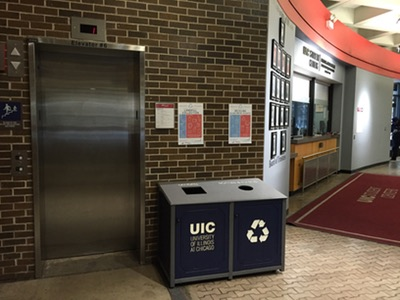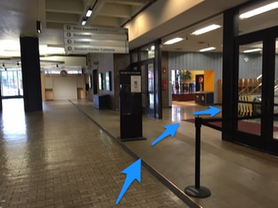
From the elevator, head forward to the registration desk. Then take the same elevator to 3rd floor where the sessions will be held.
From the escalators, turn either left or right and go around the escalators until you see the sign for Inner Circle. The registration desk will be located there. Afterward, take the second set of escalators or stairs to the 3rd floor conference area.
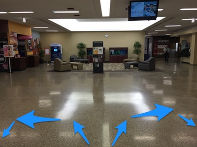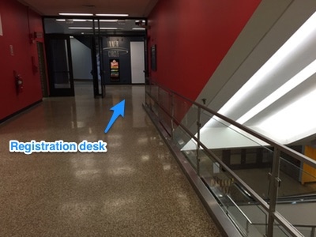
Accessible bathrooms
The 3rd floor conference area has accessible bathrooms. Bathrooms are labeled "men" and "women", and there are no family or gender-neutral bathrooms in the building.
Additional bathrooms are located in the 2nd floor passageway, near the convenience store.
Floor plans
These are annotated floor plans of Student Center East that show venue rooms and routes you can take:
- Student Center East - Ground Floor (main entrance) [pdf]
- Student Center East - 2nd Floor [pdf]
- Student Center East - 3rd Floor (conference area) [pdf]
Sprint (Sunday)
Sprint will take place in the Student Center East Tower, room 605. The two buildings are connected by a second floor passageway, so to most folks think they are the same building. To get to the sprint room, enter through Student Center East main entrance.
Approximate walking time from Student Center East main entrance (750 South Halsted) :
- to elevator (to 2nd floor): 20 seconds
- to escalator (to 2nd floor): 30 seconds
- from second floor of SCE to SCE Tower elevators: 2 minutes
If you are driving to UIC, you will most likely park in the Halsted-Taylor Parking Structure (Lot 4). After parking, head toward Halsted and Polk (750 South Halsted) to the main entrance to Student Center East. This is also a good place for taxi drop-off.
Past the main entrance doors, turn right. There will be an elevator (elevator #6) to the right, just past the UIC Information Desk. Take the elevator to 2nd floor. Or, continue to the left and then turn right toward a set of escalators and stairs. Take them to 2nd floor.
From the elevator, go a bit forward then turn right and head forward past the escalators. Now the two paths converge. Go forward down the passageway to SCE Tower, until there are 3 elevators to your left. Take one of the elevators to 6th floor. Room 605 is directly forward from the elevators.
Accessible bathrooms
There are bathrooms on the 3rd and 6th floors of SCE Tower, but they are not accessible. The nearest accessible bathrooms are located in the 2nd floor passageway. Take the elevator down to 2nd floor, turn right and head toward the escalators. The bathrooms will be on your left or right before you reach the campus convenience store.
Bathrooms are labeled "men" and "women", and there are no family or gender-neutral bathrooms in the building.
Floor plans
These are annotated floor plans of Student Center East and SCE Tower that show venue rooms and routes you can take:
- Student Center East - Ground Floor (main entrance) [pdf]
- Student Center East - 2nd Floor [pdf]
- SCE Tower - 2nd Floor [pdf]
- SCE Tower - 6th Floor [pdf]
General Venue Info
See also our general venue information.
Inspiration for communicating this information was Unlocking the Invisible Elevator: Accessibility at Tech Conferences.